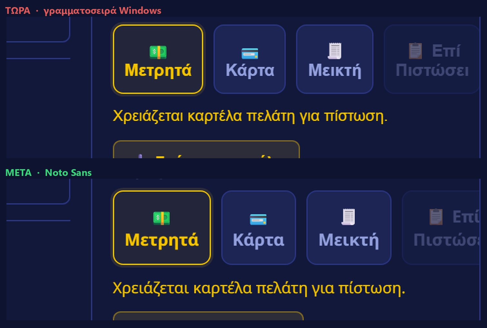
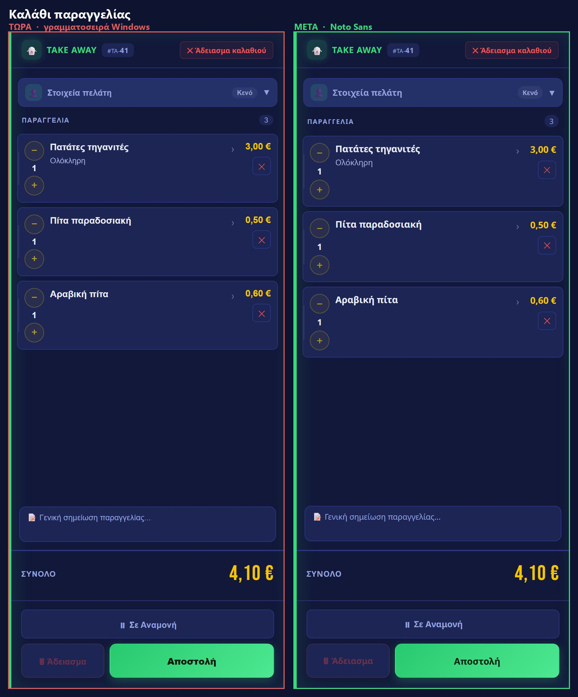
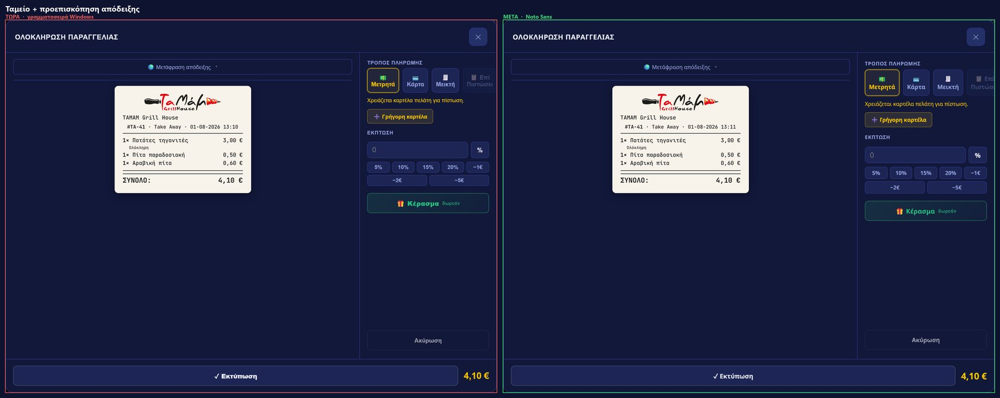
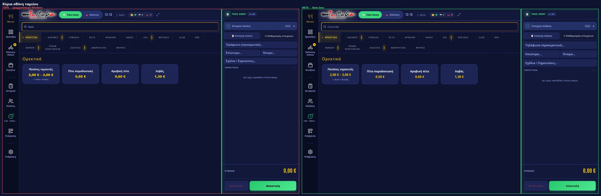
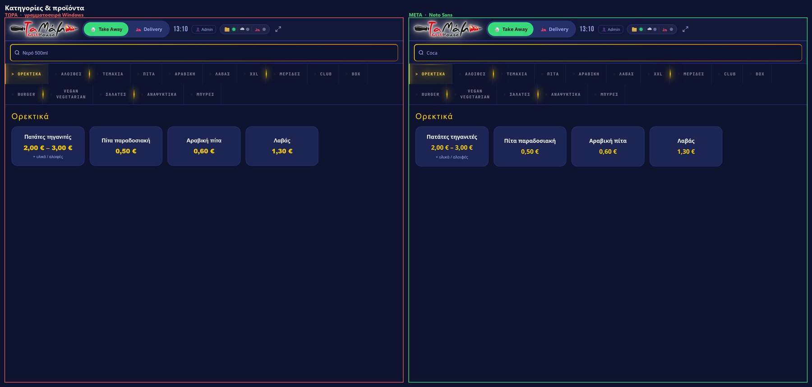
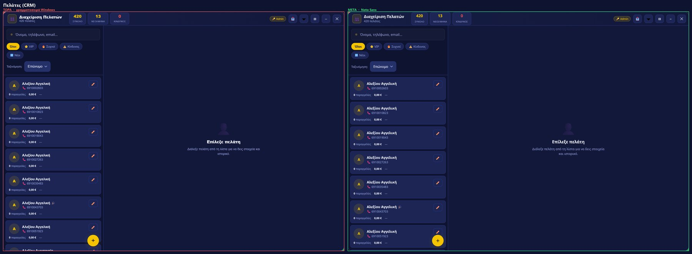
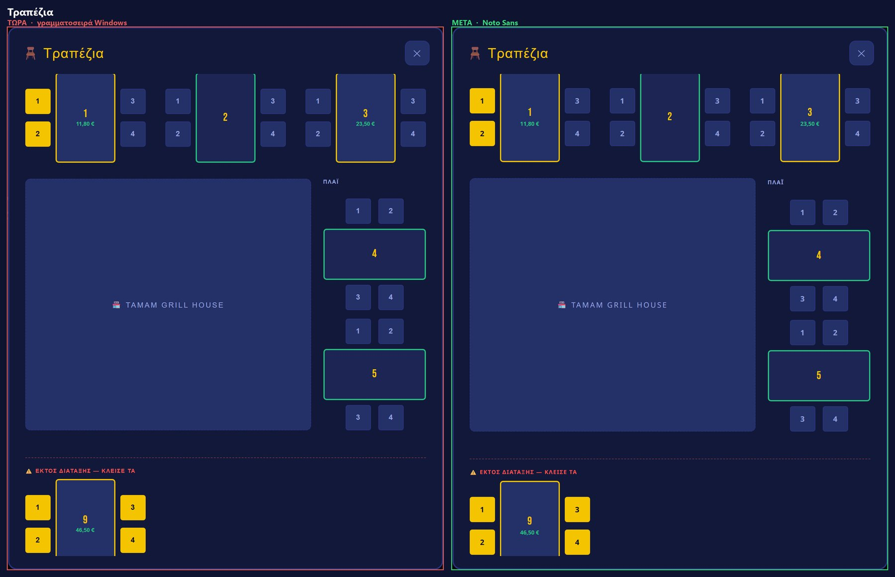
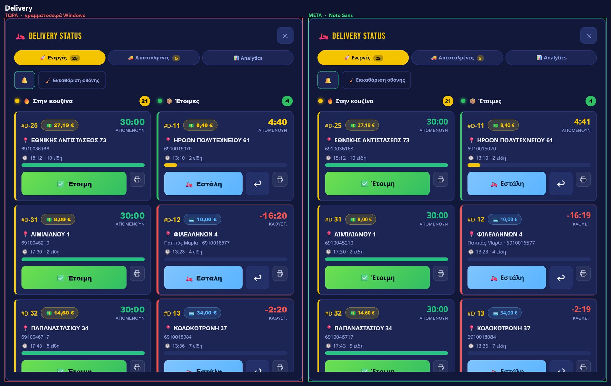

Arial αντί για μια γραμματοσειρά που δεν υπήρχε) — χωρίς καμία οπτική αλλαγή:
μετρήθηκαν 13.522 κείμενα σε 6 οθόνες και κανένα δεν άλλαξε διαστάσεις.
Η σελίδα μένει ως αρχείο της σύγκρισης.
Ανακαλύφθηκε ότι το ταμείο ζητούσε σε 117 σημεία μια γραμματοσειρά
(Noto Sans Greek) που δεν κατέβηκε ποτέ — ούτε παλιά.
Έτσι όλα τα κείμενα αποδίδονταν με τη γραμματοσειρά των Windows.
Εδώ βλέπεις τι θα άλλαζε αν το διορθώσουμε.
Αληθινό κείμενο, όχι εικόνα. Πάτα τον διακόπτη και δες τη διαφορά με τα μάτια σου.
Το Noto Sans είναι ~4% φαρδύτερο. Στο ταμείο, το 4ο κουμπί δεν χωράει πια.

| Οθόνη | Αποτέλεσμα |
|---|---|
| Καλάθι παραγγελίας | Καθαρό — κάρτες λίγο ψηλότερες |
| Πελάτες (420 καρτέλες) | Καθαρό |
| Τραπέζια | Καθαρό |
| Delivery | Καθαρό |
| Κατηγορίες & προϊόντα | Καθαρό |
| Ταμείο — κουμπιά πληρωμής | Κόβεται το «Επί Πιστώσει» |
Αριστερά με κόκκινο πλαίσιο = τώρα · δεξιά με πράσινο = μετά.







| Τι γίνεται | Δουλειά | |
|---|---|---|
| Α | Πάμε Noto Sans — το ταμείο δείχνει όπως σχεδιάστηκε | Διόρθωση στο κουμπί «Επί Πιστώσει» + έλεγχος σε 5 μεγέθη οθόνης |
| Β | Μένουμε όπως είναι — μηδέν ρίσκο, μηδέν αλλαγή | Καθάρισμα των 117 δηλώσεων ώστε να λένε την αλήθεια |